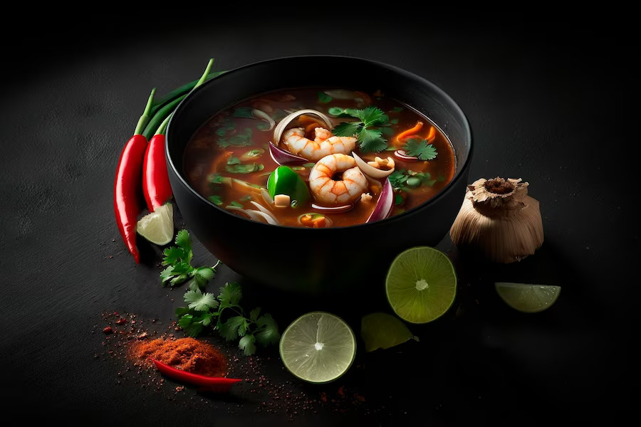

MY FAVORITE FOOD
-
Thai Soup
Thai soup is a popular soup from Thailand that is typically made with coconut milk, lemongrass, ginger, and a variety of vegetables and meats such as chicken or shrimp. It is a creamy and flavorful soup that is often served as an appetizer in Thai cuisine.
-
Faluda
Faluda is a refreshing and sweet dessert drink that originated in Persia but is now popular in many countries, including Bangladesh, India, and Pakistan. It is made by combining vermicelli noodles, rose syrup, milk, and ice cream, and is often garnished with chopped nuts and fruit.
-
Cashew Salad
Cashew salad is a healthy and flavorful salad that is popular in many parts of the world. It is typically made with a base of mixed greens, fresh vegetables such as bell peppers and cucumbers, and cashews, and is often dressed with a vinaigrette or peanut sauce. The cashews provide a satisfying crunch and nutty flavor to the salad.

Indulge in the Creamy and Spicy Delight of Authentic Thai Soup!
Here’s a recipe link for my favorite Thai Soup:
Homemade Thai Soup Recipe